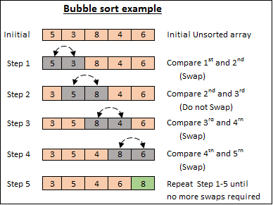

跟隔壁互相比較，順序錯了就交換，讓大的元素一直浮到最後
雖然泡沫排序法的平均跟最壞時間複雜度都是O(n^2)，但值得注意的是 best case， 出現在輸入的陣列已經是排序好的情況下。在這種情況下呢，時間複雜度是 O(n)，不會做任何的交換。 但是呢，如果你要做到最優的情形是 O(n)，你必須要加上一個小優化才行。不然以我們上面的情況， 雖然不會做任何交換，但還是會把每一個元素都 check 一遍。 可以加上一個 flag 標注內圈有沒有交換的情形發生，如果沒有，就代表陣列已經排序好了，就可以直接跳掉。